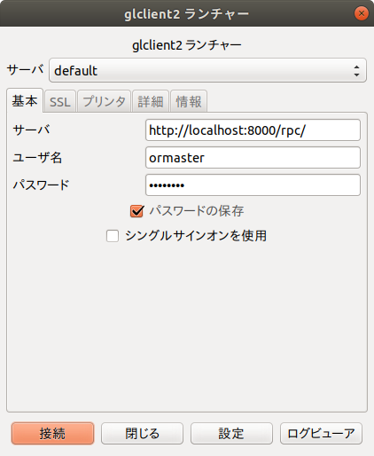
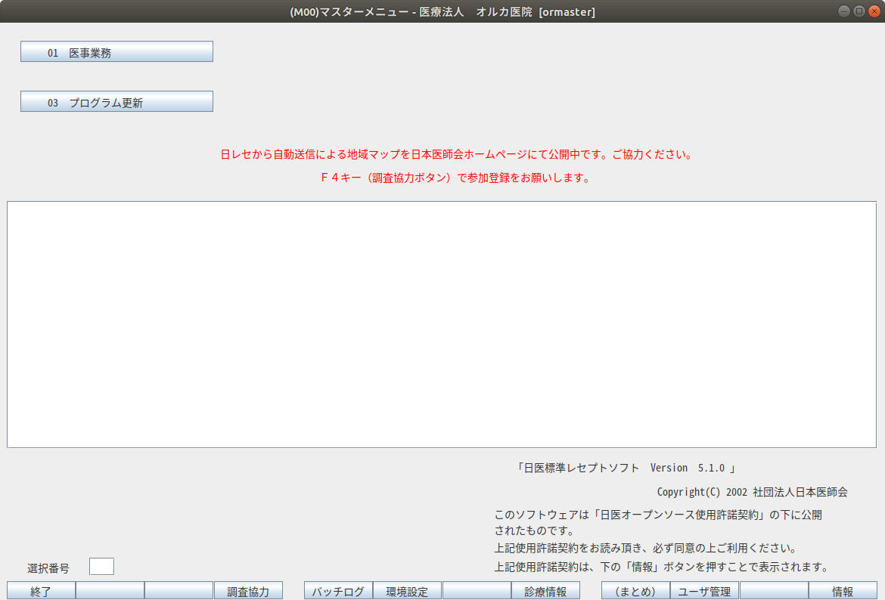

jma-receipt5.1 Ubuntu18.04LTS
酒井 陽一郎(sakai@jmedic.jp)
日医標準レセプトソフト（通称：日レセ）の稼働環境を構築するための手順書です。
VMWareの仮想マシンにUbuntu18.04LTSをインストールし、日レセ稼働環境を構築するまでを記載しています。
仮想マシンはVMWareを前提にしていますが、Hyper-V、VirturalBox等でも同様の手順になりますが、Network周りの設定だけは使用する仮想マシンマネージャによって変わりますので、適宜読み替えてください。
大まかな流れ
「Ubuntuへようこそ」の画面に切り替わり、Ubuntu18.04LTSのインストールが実行される
（目安時間：数分〜１０分程度）
OSインストール直後は、vmware-toolsがインストールされていないので、GUIの画面が切れて表示されたり、望みの解像度に変更出来ない場合がある
そのため、下記コマンドでvmware-toolsをインストールしておく
※以前はVMWareが提供するisoイメージをマウントしていましたが、現時点ではubuntuのパッケージが利用できます。
sudo apt install open-vm-tools -y
今インストールしたマシン内で作業を行うのであればマシン内で上記のようにターミナルを起動する
仮想マシンのホスト、その他からssh接続して作業を行うのであれば、仮想マシンにssh接続して好みのターミナルソフトで作業しても可。その際、Ubuntuインストール直後はsshサーバがインストールされていないので、下記コマンドでインストールしてから接続する
vmwareのデフォルト設定で仮想マシンを作った場合、NICがNAT接続になっているので、仮想マシンのホスト等から接続出来ないことがあります。その場合、NICの設定を「ブリッジ」に変更してください。
# ipアドレスの確認 ip a # sshサーバーのインストール sudo apt install openssh-server
以下、ターミナルでの作業
sudo -i
wget -q https://ftp.orca.med.or.jp/pub/ubuntu/archive.key apt-key add archive.key
root@ORCA51test:~# wget -q https://ftp.orca.med.or.jp/pub/ubuntu/archive.key root@ORCA51test:~# apt-key add archive.key OK
cd /etc/apt/sources.list.d wget https://ftp.orca.med.or.jp/pub/ubuntu/jma-receipt-bionic51.list apt update apt dist-upgrade -y exit
root@ORCA51test:~# cd /etc/apt/sources.list.d root@ORCA51test:/etc/apt/sources.list.d# wget https://ftp.orca.med.or.jp/pub/ubuntu/jma-receipt-bionic51.list --2021-10-15 11:01:41-- https://ftp.orca.med.or.jp/pub/ubuntu/jma-receipt-bionic51.list ftp.orca.med.or.jp (ftp.orca.med.or.jp) をDNSに問いあわせています... 152.199.39.108, 2606:2800:247:1cb7:261b:1f9c:2074:3c ftp.orca.med.or.jp (ftp.orca.med.or.jp)|152.199.39.108|:443 に接続しています... 接続しました。 HTTP による接続要求を送信しました、応答を待っています... 200 OK 長さ: 244 [application/octet-stream] `jma-receipt-bionic51.list' に保存中 jma-receipt-bionic51.list 100%[==============================================================================>] 244 --.-KB/s 時間 0s 2021-10-15 11:01:41 (4.59 MB/s) - `jma-receipt-bionic51.list' へ保存完了 [244/244] (----- 途中 apt update等のログ... 略) #ここから apt updateのログ root@ORCA51test:/etc/apt/sources.list.d# apt update 取得:1 http://ftp.orca.med.or.jp/pub/ubuntu bionic5.1 InRelease [6,126 B] 取得:2 http://ftp.orca.med.or.jp/pub/ubuntu bionic-common InRelease [6,151 B] (----- 途中略 ) 取得:8 http://ftp.orca.med.or.jp/pub/ubuntu bionic5.1/jma Sources [6,119 B] 取得:9 http://ftp.orca.med.or.jp/pub/ubuntu bionic5.1/jma amd64 Packages [6,853 B] 取得:10 http://ftp.orca.med.or.jp/pub/ubuntu bionic5.1/jma i386 Packages [549 B] 取得:11 http://ftp.orca.med.or.jp/pub/ubuntu bionic-common/jma Sources [4,423 B] 取得:12 http://ftp.orca.med.or.jp/pub/ubuntu bionic-common/jma amd64 Packages [5,076 B] 取得:13 http://ftp.orca.med.or.jp/pub/ubuntu bionic-common/jma i386 Packages [1,454 B] #ここからapt dist-upgradeのログ root@ORCA51test:/etc/apt/sources.list.d# apt dist-upgrade (----- 途中略 ) 取得:1 http://ftp.orca.med.or.jp/pub/ubuntu bionic-common/jma amd64 mozc-data all 2.20.2673.102+dfsg-2+jma2 [14.4 kB] 取得:2 http://ftp.orca.med.or.jp/pub/ubuntu bionic-common/jma amd64 ibus-mozc amd64 2.20.2673.102+dfsg-2+jma2 [245 kB] 取得:3 http://ftp.orca.med.or.jp/pub/ubuntu bionic-common/jma amd64 mozc-server amd64 2.20.2673.102+dfsg-2+jma2 [12.5 MB] 取得:4 http://ftp.orca.med.or.jp/pub/ubuntu bionic-common/jma amd64 mozc-utils-gui amd64 2.20.2673.102+dfsg-2+jma2 [874 kB] 13.6 MB を 2秒 で取得しました (5,766 kB/s) (----- 以下略 )
上記ログ中、
mkdir tmp cd tmp sudo apt install -y jma-receipt wget https://ftp.orca.med.or.jp/pub/etc/install_modules_for_ftp.tgz tar xvzf install_modules_for_ftp.tgz cd install_modules_for_ftp sudo -u orca ./install_modules.sh
sudo apt install -y jma-receipt (----- 途中略 以下 日レセ関連の取得ログを示します) 取得:2 http://ftp.orca.med.or.jp/pub/ubuntu bionic-common/jma amd64 jma-fonts all 20140325-u6jma1 [9,224 B] 取得:3 http://ftp.orca.med.or.jp/pub/ubuntu bionic5.1/jma amd64 libcob1 amd64 1.1-11+u6jma1 [79.2 kB] 取得:4 http://ftp.orca.med.or.jp/pub/ubuntu bionic5.1/jma amd64 libmondai1 amd64 1:3.0.0+p10-u6jma1 [127 kB] 取得:5 http://ftp.orca.med.or.jp/pub/ubuntu bionic5.1/jma amd64 panda-libs amd64 1:3.0.0+p43-u6jma1 [530 kB] 取得:6 http://ftp.orca.med.or.jp/pub/ubuntu bionic5.1/jma amd64 panda-server amd64 1:3.0.0+p43-u6jma1 [319 kB] 取得:7 http://ftp.orca.med.or.jp/pub/ubuntu bionic5.1/jma amd64 libcob1-dev amd64 1.1-11+u6jma1 [103 kB] 取得:8 http://ftp.orca.med.or.jp/pub/ubuntu bionic5.1/jma amd64 open-cobol amd64 1.1-11+u6jma1 [215 kB] 取得:9 http://ftp.orca.med.or.jp/pub/ubuntu bionic5.1/jma amd64 libgtkpanda2.0-0 amd64 2.0.6+p2-u6jma1 [156 kB] 取得:10 http://ftp.orca.med.or.jp/pub/ubuntu bionic5.1/jma amd64 libglade-panda2.0-0 amd64 2.0.5+p0-u6jma1 [90.0 kB] 取得:11 http://ftp.orca.med.or.jp/pub/ubuntu bionic5.1/jma amd64 panda-dev amd64 1:3.0.0+p43-u6jma1 [104 kB] 取得:12 http://ftp.orca.med.or.jp/pub/ubuntu bionic5.1/jma amd64 monpe-freetype amd64 2.5.2-1ubuntu2.5+u6jma1 [395 kB] 取得:13 http://ftp.orca.med.or.jp/pub/ubuntu bionic5.1/jma amd64 monpe-common all 0.6.21+p0-u6jma1 [1,187 kB] 取得:14 http://ftp.orca.med.or.jp/pub/ubuntu bionic5.1/jma amd64 monpe-libs amd64 0.6.21+p0-u6jma1 [682 kB] 取得:15 http://ftp.orca.med.or.jp/pub/ubuntu bionic5.1/jma amd64 monpe amd64 0.6.21+p0-u6jma1 [221 kB] 取得:16 http://ftp.orca.med.or.jp/pub/ubuntu bionic-common/jma amd64 orca-ca-cert amd64 1.2-u6jma1 [5,056 B] 取得:17 http://ftp.orca.med.or.jp/pub/ubuntu bionic5.1/jma amd64 jma-receipt amd64 1:5.1.0-u6jma1 [32.5 MB] (----- 途中略 ) jma-receipt (1:5.1.0-u6jma1) を設定しています ... Adding system group: orca. グループ `orca' (GID 1001) を追加しています... 完了。 Adding system user: orca. Adding system group: postorca. グループ `postorca' (GID 1002) を追加しています... 完了。 ユーザ orca をグループ postorca に追加 ユーザ postgres をグループ postorca に追加 ユーザ orca をグループ lpadmin に追加 Copying scripts files...done Copying lddef files...done Copying data files...done Copying etc files...done gpg: ディレクトリ'/home/orca/.gnupg'が作成されました gpg: keybox'/home/orca/.gnupg/pubring.kbx'が作成されました gpg: /home/orca/.gnupg/trustdb.gpg: 信用データベースができました gpg: 鍵1A033BA9ED7FC485: 公開鍵"support (plugin) <support@orca.med.or.jp>"をインポートしました gpg: 処理数の合計: 1 gpg: インポート: 1 (----- 以下略 )
日レセではデータベースにPostgresqlを利用しています。
日レセパッケージのインストール時にPostgresqlもインストールされるので、設定を行います。
エンコーディングをUTF-8に変更します。
#設定ファイルにエンコーディング情報を設定 sudo sh -c 'echo DBENCODING=\"UTF-8\" > /etc/jma-receipt/db.conf' #設定ファイルの確認 cat /etc/jma-receipt/db.conf #以下の表示が出ればOK DBENCODING="UTF-8"
sudo jma-setup
ormaster@ORCA51test:~/tmp$ sudo jma-setup DBHOST: OK (PostgreSQL:localhost) DBUSER: OK (orca) DATABASE: CREATEDB (orca) DBENCODING: OK (UTF-8) DBKANRI CREATE TABLE (tbl_dbkanri) UPDATE CHECK: OK (online) DBLIST: OK (050100-1) LIST DOWNLOAD: FILE (1) DOWNLOAD: .OK EXTRACT: .OK UPDATE: .OK DBVERSION: OK (0501001) データベース構造変更処理は終了しました
ormaster@ORCA51test:~/tmp$ sudo jma-setup DBHOST: OK (PostgreSQL:localhost) DBUSER: OK (orca) DATABASE: OK (orca) DBENCODING: OK (EUC-JP) DBKANRI OK (tbl_dbkanri) UPDATE CHECK: ERROR: センタからのDBレコード管理情報のダウンロードに失敗しました (/usr/lib/jma-receipt/init/orca-db-install.sh) ERROR: データベース構造変更処理は異常終了しました。
ormaster@ORCA51test:~/tmp$ sudo jma-setup DBHOST: OK (PostgreSQL:localhost) DBUSER: OK (orca) DATABASE: OK (orca) DBENCODING: ERROR: encoding error Database( EUC_JP) != DBENCODING(UTF-8) (/usr/lib/jma-receipt/init/orca-db-create.sh) ERROR: データベース構造変更処理は異常終了しました。
このような場合には一旦DBを削除してから再度初期化します。
DBを初期化する手順は下記の通り
#jma-receipt停止 sudo systemctl stop jma-receipt #db削除 sudo -u orca dropdb orca #もう一度db削除を行って、「そのようなdatabaseはない！」と怒られればOK sudo -u orca dropdb orca dropdb: database removal failed: ERROR: database "orca" does not exist
初回起動時にエラーになることがあるとの記述があるので、下記のように起動〜停止〜起動させる
sudo systemctl start jma-receipt sudo systemctl stop jma-receipt sudo systemctl start jma-receipt
sudo -u orca /usr/lib/jma-receipt/bin/passwd_store.sh
ここまでの手順で日レセサーバとしてのセットアップは完了で、以下のような内容で構成されました。
6.2. (OS)インストーラーでのインストール作業（目安時間：２〜３分）で設定した、Ubuntuにログインするためのユーザー/パスワード
メンテナンスのためにsshで接続する時等に使用します
| Ubuntu18.04の設定 | |
|---|---|
| IP address | 6.3.1. ネットワーク設定確認において、「ip a」で確認したアドレス |
| ユーザー | ormaster |
| パスワード | ormaster |
| jma-receiptの設定 | |
|---|---|
| バージョン | 5.1 |
| ログイン用ユーザー | ormaster |
| パスワード | ormaster |
| db(Postgresqlの設定) | |
|---|---|
| db-encoding | UTF-8 |
sudo apt install -y panda-client2
仮想マシンのglcient2若しくは、他のマシンのmonsiajクライアントで、これまでに設定した日レセに接続する

